雨滴漣漪故事
以雨滴與漣漪作為視覺元素， 呈現作品中的故事內容， 讓使用者在雨天般的畫面中閱讀他人留下的文字。
一把雨傘，成為人與人之間交流的媒介。 使用者可以透過旋轉傘面探索不同的心情與故事， 也能透過手機留下自己的雨天故事。
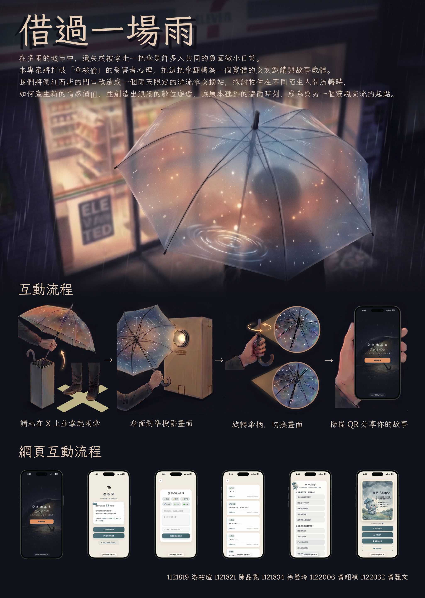
《借過一場雨》是一件以雨傘為互動媒介的網頁與互動投影作品。 雨傘不只是遮雨的工具，也可以成為人與人分享故事的媒介。 我們希望讓使用者在一個像雨天一樣的情境裡， 看見其他人留下的心情與故事，也能留下屬於自己的文字。
使用者拿起雨傘後，可以透過旋轉傘面切換三種不同的投影內容。 其中「留下一段故事」會連結到故事輸入網頁， 使用者可以閱讀其他人曾經留下的內容， 也可以輸入自己的故事，讓下一位使用者看見。
透過旋轉傘面，使用者可以在三種不同的投影內容之間切換。 每個畫面都代表不同的觀看與參與方式。
以雨滴與漣漪作為視覺元素， 呈現作品中的故事內容， 讓使用者在雨天般的畫面中閱讀他人留下的文字。
透過泡泡與不同情緒的視覺呈現， 讓使用者探索作品中的雨天心情。
使用者可以透過手機進入故事輸入網頁， 閱讀其他人留下的故事， 也能寫下自己的故事。
我主要負責故事輸入網站與資料流程， 同時參與最後階段的互動測試與投影調整。
製作故事輸入網站，並以手機操作情境為主要使用方式， 讓使用者可以閱讀與留下故事。
建立故事資料儲存流程， 將使用者輸入的內容整理並儲存至 Google Sheets。
在故事輸入網站中加入雨天人格測驗， 作為主要故事互動之外的延伸內容。
參與最後階段的旋轉偵測測試， 調整判斷數值並增加投影場景切換動畫。
最後測試階段發現原本的旋轉偵測較不穩定， 因此我提出增加第三個偵測點，並協助調整旋轉判斷數值。 同時也調整投影場景切換動畫，讓旋轉後的畫面轉換更自然。
故事輸入網頁是作品中連結使用者的重要部分。 使用者可以使用手機查看其他人留下的故事， 也可以輸入自己的故事，讓內容持續累積。
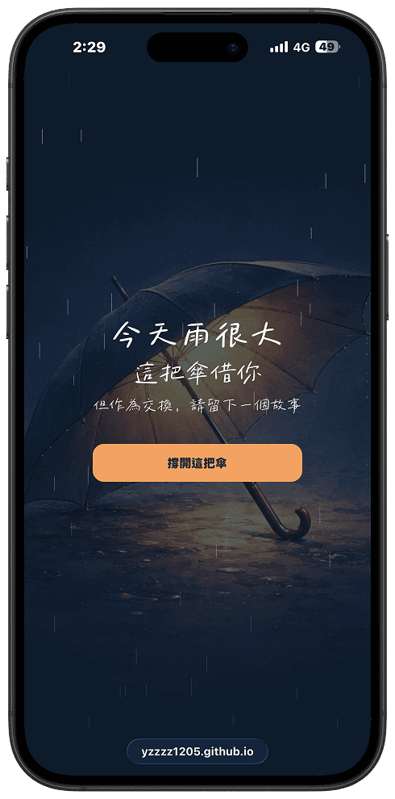
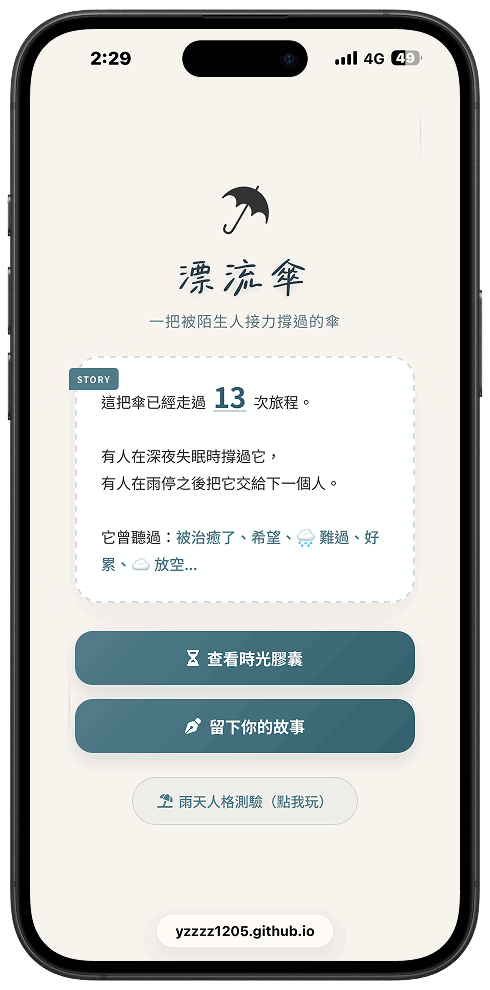
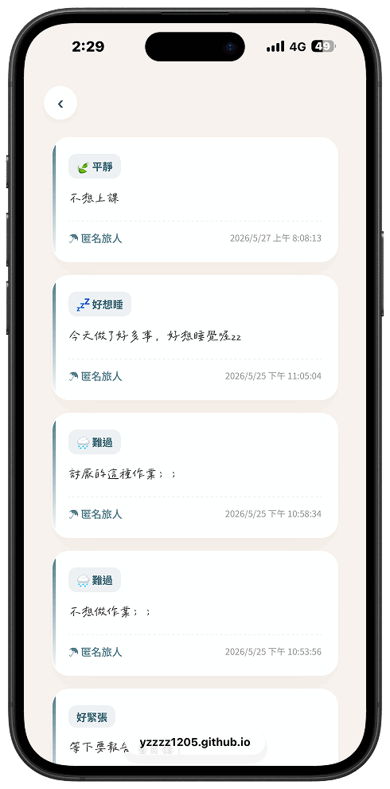
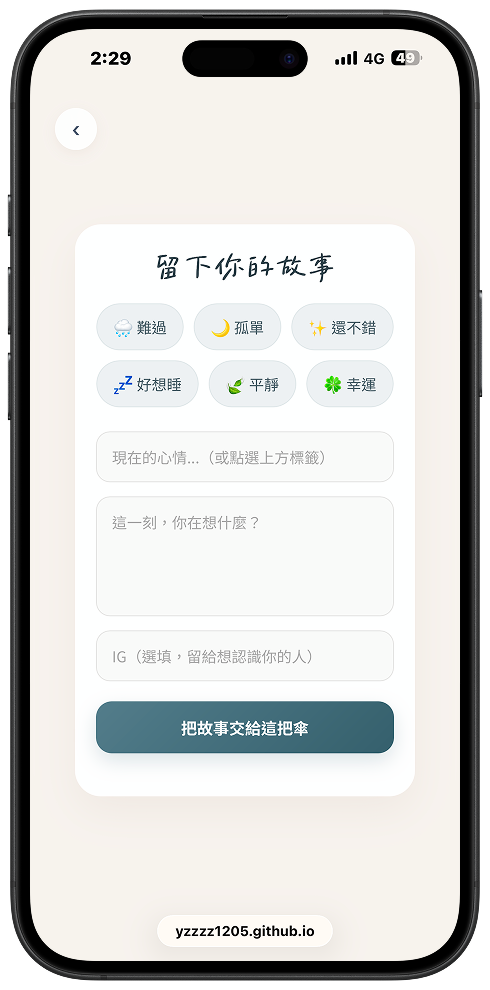
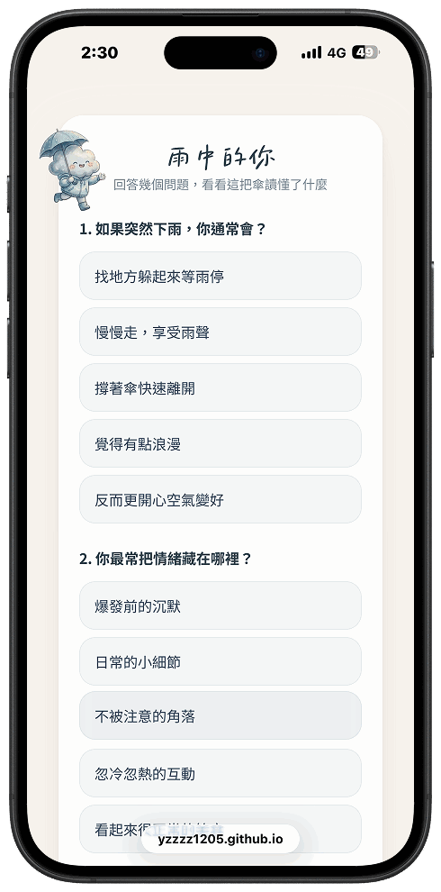
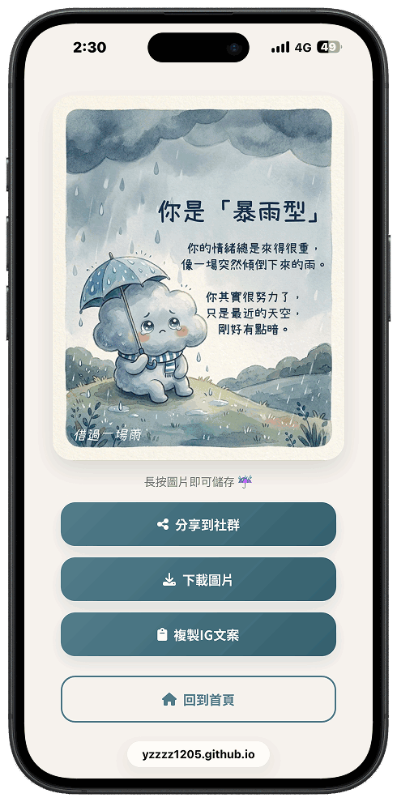
為了讓使用者輸入的故事可以被保存， 我使用 Google Sheets 作為故事資料的儲存位置， 建立從使用者輸入到作品內容呈現的資料流程。
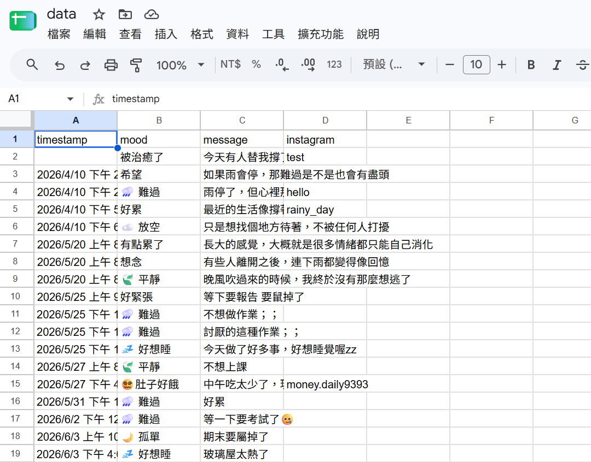
除了故事交流之外，我也在故事輸入網站中加入雨天人格測驗， 讓使用者可以用另一種方式認識自己的雨天心情， 五張小卡作為測驗結果的視覺延伸。
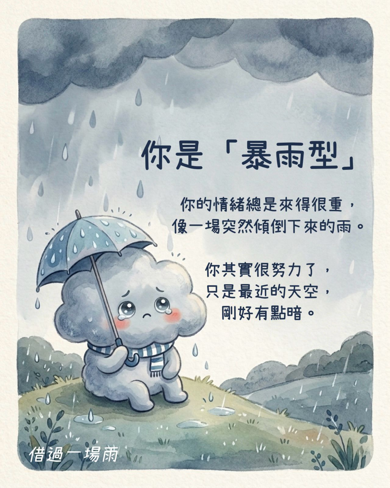
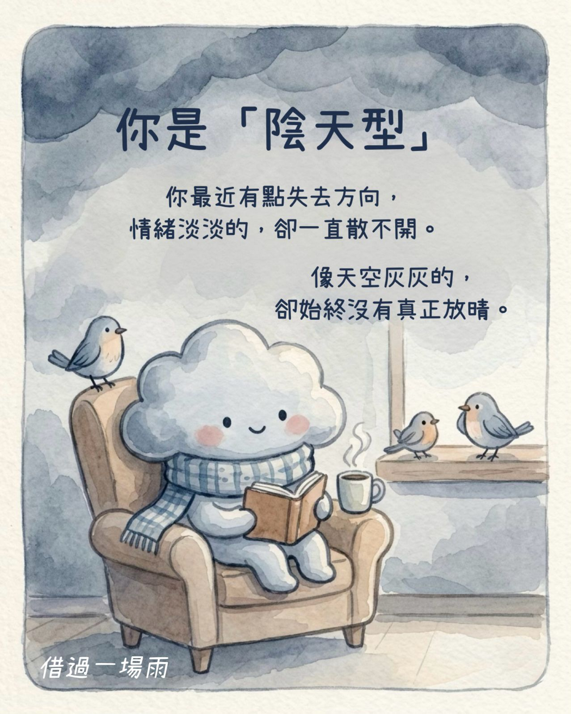
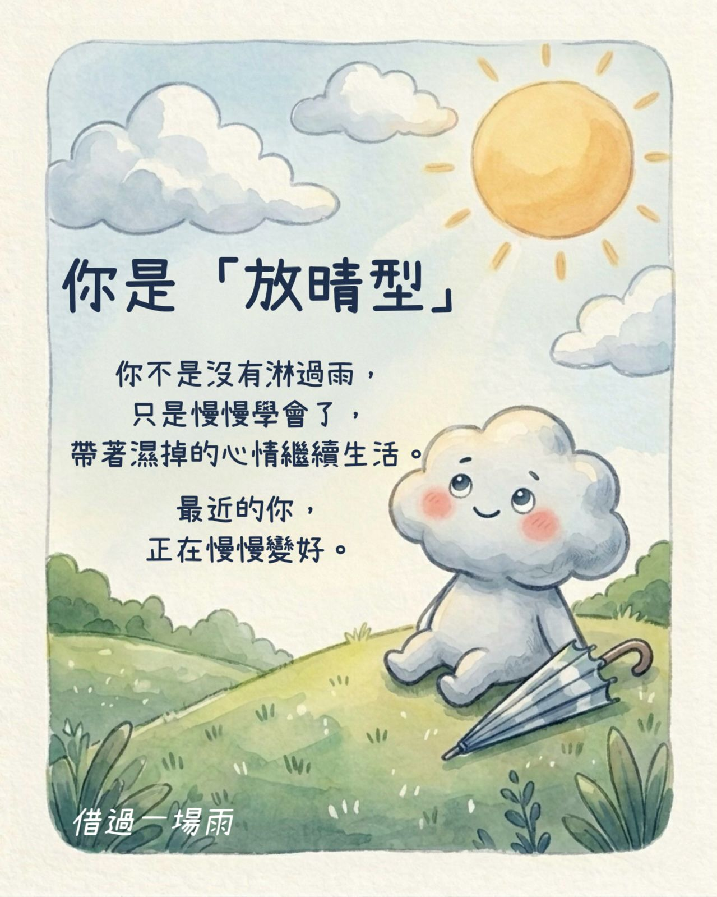
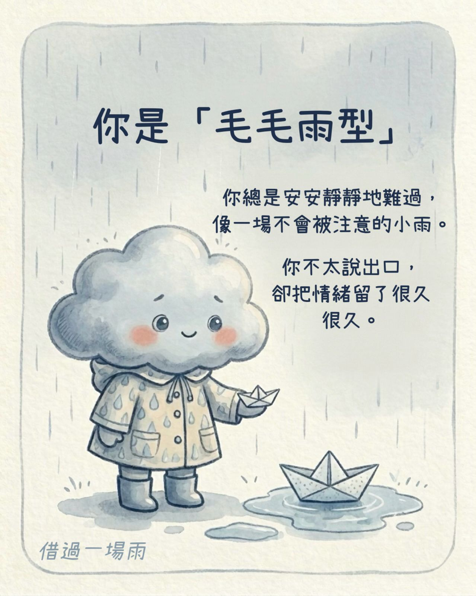
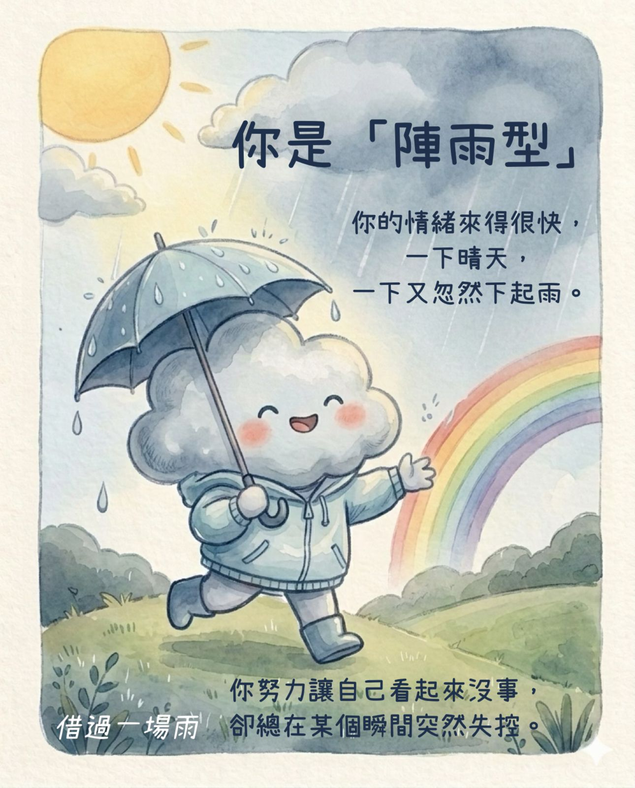
實際操作時，使用者拿起雨傘並旋轉傘面， 透過旋轉切換不同的投影內容。
這次製作讓我第一次把網頁、資料儲存與實體投影互動串在同一個作品裡。 我原本比較熟悉的是螢幕上的網頁與介面， 但實際測試後才發現，互動作品的體驗還會受到投影位置、 傘面方向、使用者站位與操作方式影響。
在最後的測試與調整中，我也學習到除了確認功能能不能運作， 還需要實際觀察使用者怎麼操作，並從操作過程找出需要改善的地方。